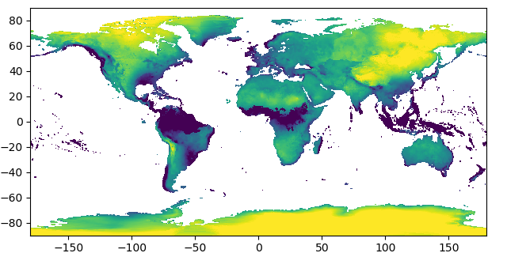
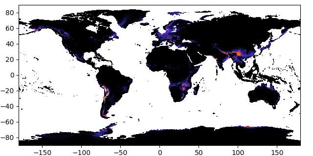

Mikrubi Graphics
Module introduction
MikrubiGraphics is an accessory module of Mikrubi. It illustrates many types of objects involved in Mikrubi including shapefile, raster layer, Mikrubi.CtPixels, and MikrubiField as images, which may be useful while debugging.
Since the plotting engine is substantially the Python package matplotlib (wrapped into Julia by PyPlot.jl), MikrubiGraphics is not imported into the main package. When necessary, users may include this accessory module either by include("path/to/Mikrubi/src/MikrubiGraphics.jl"), or by command using MikrubiGraphics as normal packages after push!(LOAD_PATH, "path/to/Mikrubi/src/"), if Python as well as the Python package matplotlib has been installed.
MikrubiGraphics.showlayer — Functionshowlayer(layer; f=identity, kwargs...)Shows a layer. Keyword argument f = identity is a function acted separately on every element. A possible alternative is f = x -> x ^ 0.4.
MikrubiGraphics.showfield — Functionshowlayer(layer; f=identity, kwargs...)
showfield(field, layer; f=tiedrank, kwargs...)Shows geographic information and environmental information of a Mikrubi model. The three principal components are reflexed in red, green, and blue. Keyword argument f = tiedrank is a function acted on columns of field.vars as a whole. A possible alternative is f = identity.
MikrubiGraphics.showctpixels — Functionshowctpixels(ctpixels, layer; salt=20, kwargs...)Shows a Mikrubi.CtPixels. Every county is assigned a hash color (influenced by a fixed salt value also), and every pixel has the composite color from all counties assigned to it. Empty cells are depicted white.
MikrubiGraphics.showshptable — Functionshowshptable(shptable; kwargs...)Shows lines from polygons in shptable. Identical segments are reduced as one.
The example of Allium wallichii
In the beginning, here we get the packages, path strings, and decoration functions ready:
using Mikrubi
using MikrubiGraphics
using PyPlot
shpfile = "path/to/china/counties.shp";
layerdir = "path/to/worldclim/layers";
countylist = "path/to/occupied/county/list.txt";
largeaxis() = gca().set_position([0.06, 0.07, 0.9, 0.9])
worldwide() = (xlim(-180, 180); ylim(-90, 90))Illustrating the shapefile and the raw layers
Now the workflow is disassembled into steps, and we use functions implemented in MikrubiGraphics to check the outputs.
First of all, a shapefile is read into Julia. We can see clearly that the boundaries of counties of China plotted in black line.
shptable = readshape(shpfile)
figure(figsize=(6.4, 6.4))
showshptable(shptable)
largeaxis()
savefig("shpfile.png")
close()
Then, a series of WorldClim climatic factor layers are read in, and the first layer among them is illustrated.
layers = readlayers(layerdir)
figure(figsize=(6.4, 3.2))
set_cmap("viridis")
showlayer(layers[1])
largeaxis()
worldwide()
savefig("rawlayer1.png")
close()
Illustrating the rasterization
Later, counties are rasterized using the grid defined by the layers. Every exclusive pixel is assigned the characteristic color of the county it belongs to, while pixels shared by multiple counties are dyed composite (thus always darker) colors.
ctpixels = rasterize(shptable, layers[1])
figure(figsize=(6.4, 6.4))
showctpixels(ctpixels, layers[1])
showshptable(shptable, lw=0.5)
gca().set_aspect("auto")
largeaxis()
savefig("ctpixels.png")
Zoom in, and details of the rasterization result are clearer.
xlim(88, 98)
ylim(30, 40)
savefig("ctpixels2.png")
close()Illustrating the extracted layers and the Mikrubi field
Then, a Mikrubi field is constructed from the results above. Notable, layers lie in the input argument list at both the first and the third places. Layers at the first place are masked by the rasterization result and transformed into fewer (by default, three) layers by principal component analysis, and the results are finally assigned to ylayers here. Meanwhile, layers at the third place undergo the same processes but no masking is applied, whose results are assigned to gylayers.
Now check the images of ylayers[1] and gylayers[1] under the same clim, and we can see that they are actually identical on their overlapping part — because they are derived from the same input layers and have experienced the same operations.
field, ylayers, gylayers = makefield(layers, ctpixels, layers)
figure(figsize=(6.4, 5.2))
showlayer(ylayers[1])
gca().set_aspect("auto")
largeaxis()
clim(-6, 2)
savefig("pcalayer1.png")
close()
figure(figsize=(6.4, 3.2))
set_cmap("viridis")
showlayer(gylayers[1])
largeaxis()
worldwide()
clim(-6, 2)
savefig("gpcalayer1.png")
close()
At the same time, we may check the Mikrubi field just obtained visually in RGB space (skewed by f = tiedrank in showfield for better image representation). Parts of China are dyed different colors, and the pattern does coincide with our knowledge.
figure(figsize=(6.4, 5.2))
showfield(field, layers[1])
gca().set_aspect("auto")
largeaxis()
savefig("field.png")
close()
Illustrating the predictions
Finally it is the fitting and the predictions. Since the model here is in high dimensionality beyond imagination, we turn to check the images of the predictions. Analogously, under the same clim values, the predicted regional distribution (geodist) and the predicted global distribution (ggeodist) are identical over their overlapping area. Using graphics, we can confirm that everything is in accordance with expectation.
ctlist = readlist(countylist)
model = fit(field, ctlist)
geodist = predict(ylayers, model)
figure(figsize=(6.4, 5.2))
set_cmap("CMRmap")
showlayer(geodist, f = x -> x ^ 0.35)
gca().set_aspect("auto")
largeaxis()
clim(0, 0.45)
savefig("geodist.png")
close()
ggeodist = predict(gylayers, model)
figure(figsize=(6.4, 3.2))
set_cmap("CMRmap")
showlayer(ggeodist, f = x -> x ^ 0.35)
largeaxis()
worldwide()
clim(0, 0.45)
savefig("ggeodist.png")
close()